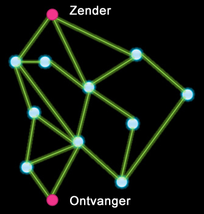

Wat is het Internet?
In deze les leer je de basis van de werking van het Internet.
Op deze pagina zie je hoe een website je de bestanden stuurt die je opvraagt en leer je een aantal termen om over het Internet te spreken.
Het Internet is een netwerk van onafhankelijke maar verbonden apparaten overal op de wereld. Mensen gebruiken "het Internet" en "het World Wide Web" door elkaar, maar dit zijn verschillende zaken. Het World Wide Web (het "web") is de verzameling van onderling gelinkte documenten (zoals HTML bestanden) die je bekijkt met een web browser door het invoeren van een adres als http://bjc.berkeley.edu/website/privacy.html.
De meeste webpagina's zijn geschreven in HTML (hypertext markup language). Je browser vraagt deze op bij de webserver via HTTP (hypertext transfer protocol).
Wat is een URL?
Een URL, of Uniform Resource Locator, is een adres om een webdocument te
vinden op een (web)server (een computer die data bewaart om anderen toegang tot deze data
te
bieden). Een URL kun je splitsen in drie delen:
- protocol—de standard voor communicatie tussen browsers en servers (gewoonlijk "http" of "https");
- domain name—de naam van de server die de data (webdocumenten) aanbiedt;
- path—de locatie van de data in een hiërarchie van mappen op de server.
-

 Beschrijf de onderdelen van deze URL voor het Snap! logo:
Beschrijf de onderdelen van deze URL voor het Snap! logo:
http://snap.berkeley.edu/Logo5.png
Hoe werkt het Internet?
Het Internet is veel algemener dan het World Wide Web. Het biedt ook email, file transfer, mobiele apps, chat-toepassingen (zoals WhatsApp), en veel andere manieren waarmee computers achter de schermen communiceren.
Een protocol is een verzameling afspraken en regels om communicatie goed te laten verlopen.
Een pakket is een kleine brok data: tekst, getallen, lijsten, enz.
Het internet is een gigantisch netwerk van computers dat communicatie over de gehele wereld verzorgt.Het doet dit vooral door gebruik te maken van een aantal protocollen (standaarden voor communicatie) waar je meer over zal leren in Les 2:
- IP (Internet Protocol) een adressysteem dat paden vindt naar andere computers en data splitst in kleine pakketjes die los worden verzonden.
- TCP (Transmission Control Protocol), een betrouwbaar systeem voor het verzenden van datapakketjes.
Het algoritme dat ervoor zorgt dat data hun bestemming bereiken moet blijven werken zolang het internet groeit. Dus is het internet ontworpen met de volgende twee ideeën in gedachte:
- 
- Overtolligheid: Er zijn meerdere paden via de fysieke verbindingen van het internet om voor overtolligheid te zorgen. Als een pad niet beschikbaar is, is er zo altijd een ander pad dat gebruikt kan worden. Dit kan je in het plaatje rechts zien.
- Hiërarchie: Er zijn twee hiërarchische adressystemen op het internet, domeinnamen, zoals hieronder, en IP-addressen. Deze hiërarchieën werken net als een postsysteem, dat mensen localizeert eerst met hun provincie, dan hun gemeente, dan hun straat en dan hun huisnummer.

Digitale Informatie en de Cloud
- Een bit is de kleinste eenheid van data, die maar twee mogelijke waardes heeft (1 of 0).
- De bitsnelheid van een verbinding is het aantal bits dat verzonden kan worden per seconde.
- Bandbreedte is de zendcapaciteit van een systeem (voor digitale data wordt het gemetene met de bitsnelheid). Hogere bandbreedte is beter; de data reist dan sneller.
- Latentie of Wachttijd is de tijd tussen het verzenden en ontvangen van ee bericht. Lagere latentie is beter; de data heeft minder tijd nodig om te beginnen met verzonden worden.
Denk aan een disk drive in een computer. Om informatie van of naar de disk te sturen, moet de computer de magnetische kop naar de plek op de disk brengen waar de informatie is en wachten tot de disk naar de correcte positie draait, dit kan allemaal meer dan een seconde duren. Die wachttijd is de latentie. Maar zodra de kop op de goeie plek staat, is de bandbreedte van de disk heel hoog.

De snelheid van een systeem (zoals de bandbreedte en latentie van internet) is van invloed op hoe we het gebruiken. In de vroege dagen van internet was de bandbreedte traag, dus mensen konden geen video verzenden (alleen tekst en kleine afbeeldingen). Streaming video vereist een hogere bandbreedte, maar kan een hogere latentie tolereren. Als je internetverbinding een hoge latentie heeft, zal je computer bij het streamen van een video een aantal seconden de video bufferen (van tevoren downloaden) voordat deze begint met afspelen, zodat deze niet hoeft te pauzeren wanneer de gegevens opraken.
De grootte van een systeem heeft ook invloed op hoe het wordt gebruikt. In de begindagen van computers waren computers enorm en duur, dus gingen mensen naar het computercentrum van hun bedrijf of plaatselijke universiteit om hun berekeningen uit te voeren. Naarmate computers kleiner en efficiënter werden, werden gecentraliseerde computercentra veel minder belangrijk omdat mensen berekeningen konden uitvoeren op hun persoonlijke machines. Maar tegenwoordig, vereisen bepaalde soorten berekeningen (zoals zoekopdrachten op het web en spraakherkenning) meer rekenkracht, en deze taken worden in plaats daarvan naar grote computercentra gestuurd die worden beheerd door bedrijven zoals Google en Amazon, waar tienduizenden computers samen aan een probleem werken. Je hebt nog steeds een computer aan je bureau (of in je hand), maar sommige van de programma's draaien eigenlijk op een groep computers op een van deze gecentraliseerde boerderijen.
Deze computercentra samen worden vaak de cloud genoemd. Je gebruikt de cloud al dit hele vak: al je Snap!-projecten staan in de cloud.
Data opslaan in de cloud betekent dat het ergens opgeslagen moet zijn op het internet, maar je weet niet waar precies. De cloud service provider (Google Drive, Dropbox, etc.) zorgen voor de echte opslaglocatie.
Data opslaan in de cloud laat ons gemakkelijk ons werk delen, maar het verhoogt wel het aantal veiligheidsrisico's. Als iemand je wachtwoord ontdekt dan kunnen ze bij al je gegevens. Of iemand onderschept de data terwijl ze naar de cloud worden gestuurd
- Verzin een voorbeeld van een toepassing die beïnvloed wordt door de latentie en bandbreedte van het internet. Leg uit hoe de snelheid van het internet het voorbeeld beïnvloedt.